5 Class Modeling with UML
After reading this chapter you should be able to:
- explain what a class model says about a system’s data that a relational schema does not
- write a problem statement, use cases, and requirements that bound a system and say what it must do
- identify the classes, attributes, and associations in a narrative description of an industrial system, eliminating and testing the candidates
- specify an attribute’s domain by enumeration, citation, acceptance rule, or range
- draw a cloud instance diagram of a few objects and links, and read multiplicity from it
- specify the multiplicity of each end of an association
- model association classes, qualified associations, aggregation, and composition
- decide when an association of three classes cannot be replaced by associations of two
- model generalization and state when it is appropriate
- review a class model against the requirements it is meant to serve
- read a model drawn in crow’s foot notation by translating it to a class model
Every query of Chapter 3 and Chapter 4 read tables that someone had already designed. The tables had keys, the keys connected them, and the connections answered the questions. None of that was an accident. Behind every well-built database is a decision about what the business needs to remember, made before any table was defined: which things matter, what is recorded about each, and how they are related.
This chapter presents the language in which those decisions are written, the class diagram of the Unified Modeling Language (UML). A class diagram describes the things of a business and their relationships without saying how they will be stored, so it can be discussed with the people who know the business, most of whom have never seen a table. Chapter 6 then turns a class diagram into tables, and the tables of the book’s database are what that turning produced.
Throughout the chapter, we also draw the instances that a class diagram describes: the particular customers, orders, and parts. A class diagram makes a general statement, such as “each order is placed by one customer”, and a picture of a few particular orders and customers is often the quickest way to see whether the statement is true, and what it forbids.
This chapter builds the class models behind the stages of the book’s database, one stage at a time, as Appendix C describes them. The few queries it shows use stages D1 through P3.
5.1 What a class model adds
This section presents the difference between a class model and the relational schema of Section 2.4, and why a design begins with the first.
Recall from Listing 2.1 the relational schema of stage D2. It says that customer_order has a foreign key customer_fk that refers to customer_pk in customer and must not be NULL. From that line, a reader can work out that each order belongs to exactly one customer, and, with some thought, that a customer may have any number of orders. The schema says it in the language of storage: columns, keys, and NULL.
Figure 5.1 says the same thing in the language of the business.
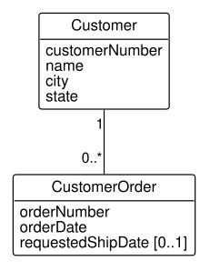
Each box of Figure 5.1 is a class, a kind of thing the business records: customers and customer orders. The line between them is an association, a relationship between the two kinds of thing, and the numbers at its ends say how many of each may be related: each order belongs to exactly 1 customer, and each customer has 0..* orders, zero or more. Notice what the diagram does not show. There is no customer_pk, no customer_fk, and no mention of NULL. The keys are how tables implement the relationship, and a class model leaves that choice to Chapter 6.
A class model adds three things that a relational schema does not state. First, it states every relationship in both directions, with a number at each end; the schema states one direction and leaves the other to be inferred. Second, it names what the relationships mean, in the words the business uses. Third, it can express relationships that tables can only implement indirectly, such as the association classes and qualified associations of Section 5.5. Thus, a class model is the design, and the tables are one implementation of it. That is the view of Blaha and Premerlani (Blaha and Premerlani 1998), whose method for turning class models into tables this book follows.
5.2 Where a class model starts
This section presents the documents from which a class model is built: the problem statement, the use cases, and the requirements.
A class model records what a business needs to remember, and the business has to say what that is before anyone can draw it. Three short documents, written with the people who will use the database, say it. Each is a work product of analysis, the stage of a project that establishes what a system must do before anyone decides how it will do it.
The first is the problem statement, a short narrative of why the system is needed, the setting it works in, and what it must do. For a database of the size of the book’s, half a page is enough. A problem statement is easiest to write by answering six questions: who the system is for, what problem it solves, where it will be used, when it is needed, why it is needed, and how, in general terms, it will work. It helps to ask a seventh: what problems the system will not solve. For HG Industries’ order and shipment records, the distribution department might write:
HG Industries sells hand trucks and garden carts to hardware stores, farm suppliers, and garden centers, which order by phone and by e-mail. The sales office records each customer order, with a line for each product ordered, its quantity, and the price agreed. The company ships from two warehouses, in Fayetteville and Tulsa, each of which keeps a stock of every product. An order may leave in several shipments, from either warehouse, each by a carrier, and a shipment may carry only part of an order line. The sales office needs to know which orders are still open and what remains to be shipped on each; the warehouses need to know when a product’s stock falls to its reorder point. The system does not handle invoicing or payment, which the accounting department keeps separately.
The last sentence is as important as the others. It draws the boundary of the system, and a boundary left undrawn grows during design.
The second document lists the system’s use cases. A use case is a function of the system as one of its users sees it: a sequence of steps that a user starts in order to get something done (Jacobson et al. 1992). The users are named by role, not by person; a role that uses the system is called an actor. A use case diagram draws the actors as figures, the use cases as ovals inside a box that marks the system’s boundary, and a line from each actor to the use cases it starts. Figure 5.2 draws the use cases of the order and shipment records.
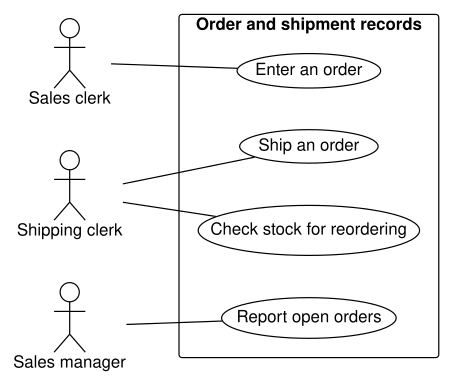
The sales clerk of Figure 5.2 enters orders; the shipping clerk ships them and checks stock for reordering; the sales manager reports the open orders. Each oval stands for a short written description. For example:
| Use case | Ship an order |
|---|---|
| Actor | Shipping clerk |
| Description | The clerk selects an open order and a warehouse, and records a shipment: its date, its carrier, and the quantity of each order line it carries. The quantities reduce the warehouse’s stock of each product. |
| Notes | A shipment may carry part of a line; the rest stays open for a later shipment. |
Notice that Table 5.1 names things the database must remember: an order, its lines, a warehouse, a shipment, a carrier, a quantity, and stock. The use cases are where most of a class model’s nouns first appear.
The third document turns the use cases into requirements, statements precise enough to test, written in one form: the system shall do something, under stated conditions. For example: The system shall record, for each shipment, the warehouse it leaves from, its date, its carrier, and the quantity of each order line it carries. And: The system shall list, for any open order, the quantity of each line not yet shipped. Requirements of the second kind are the requests that Section 5.9 traces through a model. Requirements about qualities rather than functions, such as how fast a report must appear or who may change a price, are called nonfunctional requirements; Section 9.4 takes up one kind that a database enforces, its privileges.
Thus, the problem statement bounds the system, the use cases name its functions and most of its nouns, and the requirements say what it must answer. Section 5.8 returns to these documents to build a class model from them, after the next sections present the parts of a class model.
5.3 Classes and attributes
This section presents classes, the objects they describe, and the attributes and domains that describe the objects.
An object is a particular thing the business needs to remember: the customer Riverside Hardware, the order SO-5001, the axle AX-10. An object has an identity of its own, so two objects remain two even when every recorded fact about them is the same. A class describes a group of objects with the same kinds of facts, the same relationships, and the same meaning. Riverside Hardware and Summit Farm Supply are objects of the class Customer.
A class can be understood in two ways. Its definition, the test that decides whether a thing belongs to it, is called its intension. The set of objects that pass the test, at any moment, is called its extension. The extension suggests a picture. Figure 5.3 draws the class Customer of stage D1 as a cloud, the set of its objects, with each object a dot labeled by its customer number.
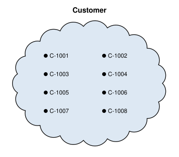
A picture of a class’s objects, and of the links between them, is called a cloud instance diagram. The objects of Figure 5.3 are the eight rows of Table 2.1, now seen as members of a set rather than as rows of a table. UML has its own picture of instances, the object diagram, which draws each object as a box. The cloud instance diagram says the same things, and its clouds make one idea hard to miss: a class is a set, and every statement a class diagram makes is a statement about the members of sets.
An attribute is a named property that every object of a class has a value for, such as a customer’s name or an order’s date. Each attribute draws its values from a domain, the set of values allowed for it, just as a column does (Section 2.1). In Figure 5.1, Customer has the attributes customerNumber, name, city, and state. Class and attribute names follow a UML convention: a class name is a singular noun with each word capitalized (CustomerOrder), and an attribute name begins in lower case (requestedShipDate). Class names are singular because a class describes one object: Customer, not Customers.
An attribute that an object may lack is marked with a multiplicity in brackets. requestedShipDate [0..1] in Figure 5.1 says that an order has zero or one requested ship date, the fact that the column’s NULLs record in Table 2.5. Attributes without a mark have exactly one value.
Two kinds of attribute do not belong in a class model. The first is an identifier invented for the database, such as customer_pk: objects are distinguishable in themselves, and an identifier is a way of implementing that, chosen in Section 6.6. A business identifier that people use, such as the customer number printed on every invoice, does belong, since it is a fact the business records. The second is a reference to another object, such as customer_fk: a reference is a relationship, and a class model draws relationships as associations, not as attributes.
Deciding what should be a class and what an attribute is the first judgment of modeling. A thing deserves a class when it has facts of its own, or relationships of its own, or when the business needs to know about it even while nothing refers to it. Otherwise it is an attribute of whatever it describes. For example, a shipment’s carrier is recorded in stage D5 as a name, an attribute of Shipment. If the business began to record each carrier’s contract rate and contact, or wanted a list of approved carriers before any shipment used one, the carrier would become a class of its own.
A good way to test a class is to write its description, a few sentences that let any reader decide whether a given thing is one of its objects. For example: A customer is a business that buys HG Industries’ products for resale or its own use, and to which the company has assigned a customer number. A business becomes a customer when it is assigned a number, before it places an order. The last sentence is a decision about the business, and it has a consequence in the data: Northgate Hardware, with no orders, is still a customer. Descriptions like this one, collected for every class, attribute, and association, form the model’s data dictionary, the reference that says what every name in the model means.
5.3.1 Attributes with parts
Many values that a business records have parts. A telephone number has an area code, a location has a latitude and a longitude, and an address has a street, a city, a state, and a ZIP code. Recall from Section 2.1.1 that a value is atomic when it is one member of its column’s domain, rather than several values joined in one. Thus, whether a value is atomic depends on its domain and on how the business uses it, not on how it looks. While modeling, the test is a question: does any query, rule, or sort need part of the value on its own, in a way the value’s domain does not supply? The answer leads to one of three choices.
The first choice keeps the value as one attribute, because the business uses it whole. A customer’s name is printed on invoices and searched as a whole, and no request asks for its second word. A telephone number is dialed whole, and the sales office never asks which customers share an area code. Each is one attribute, with one domain.
The second choice splits the value into attributes, because its parts are used separately. The Customer class of Figure 5.1 records city and state as two attributes, since the business asks for the customers in a state and sorts them by city. The points of a transit network record a latitude and a longitude rather than one location. A request for the stops north of a given latitude compares latitudes alone, and a request for the stop nearest a rider computes a distance from both. Each part is an attribute with a domain of its own (e.g. a latitude between -90 and 90 degrees).
The third choice promotes the value to a class of its own, because it repeats or is shared. A customer may have several telephone numbers, one for orders and one for accounts payable. Recall that an attribute has one value for each object, or none when it is marked [0..1]. Thus, several telephone numbers of one customer are objects of a class, linked to the customer by an association. (UML also allows an attribute marked [0..*]; this book draws a class instead, since the numbers need a table of their own in any case.) In the same way, a delivery site that several customers share, such as the receiving dock of a shopping center, is one thing, recorded once. When the dock’s address or its receiving hours change, one change updates every customer it serves. This is the judgment between a class and an attribute, made earlier for a shipment’s carrier, applied again: a thing with facts or relationships of its own deserves a class.
Figure 5.4 draws the third choice for a customer’s telephone numbers. HG Industries’ database records no telephone numbers, so the model is hypothetical.
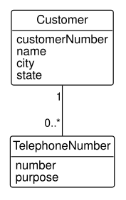
The class TelephoneNumber of Figure 5.4 has two attributes: number, the number as it is dialed, and purpose, what the number is for. Read both ways, the association says that each customer has zero or more telephone numbers, and each telephone number belongs to exactly one customer; Section 5.4 presents these numbers in full. Notice that TelephoneNumber has no attribute naming its customer. The line records which customer a number belongs to, as every association does. A fourth number for a customer is one more object, and the model does not change.
Each choice becomes something different when Chapter 6 turns the model into tables. An attribute kept whole becomes one column, and an attribute split into parts becomes one column per part. A class becomes a table of its own. That last table, with one row per telephone number, is where Section 2.1.1 moves a customer’s telephone numbers to remove a repeating group. Section 7.4 makes the ban on repeating groups part of first normal form.
The wrong choice shows itself in the requests. Suppose that a customer’s address were kept as one attribute, “1200 Main St., Fayetteville, AR 72701”, and the shipping department then asked for the customers in each ZIP code. A query would have to pick the ZIP code out of the text, and an address typed without it, or with the state spelled out, would slip past it. Suppose instead that the telephone numbers were attributes phone1 and phone2 of Customer. They form the repeating group of Section 2.1.1: a third number needs a change to the model, and a search for one number must look in both attributes. Thus, you should ask the test question of every value with parts, and let the requests decide.
5.4 Associations and multiplicity
This section presents links and associations, and the multiplicity that says how many objects each object may be linked to.
A link is a connection between two particular objects: Riverside Hardware placed order SO-5001. An association describes a group of links with the same meaning between objects of two classes: customers place orders. In other words, a link is to an association as an object is to a class. A cloud instance diagram draws each link as a line from a dot in one cloud to a dot in another, and Figure 5.5 draws the links of the association between four customers and their orders at stage D2.
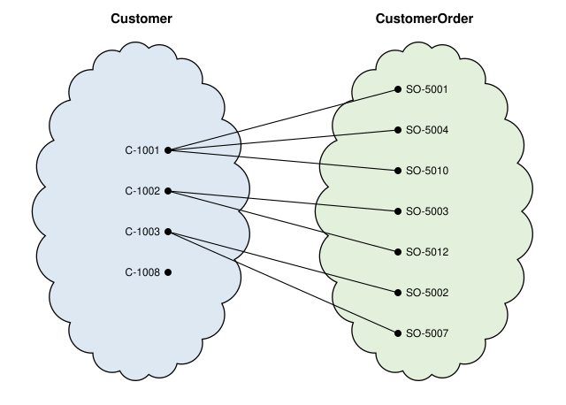
Each line of Figure 5.5 is one link. Riverside Hardware (C-1001) has three lines, one to each of its orders; Summit Farm Supply (C-1002) and Cedar Creek Home Center (C-1003) have two each; and Northgate Hardware (C-1008) has none. On the other side, every order has exactly one line.
The multiplicity at an end of an association states how many objects of the class at that end may be linked to one object at the other end. In a cloud instance diagram, multiplicity is counted: the number of lines that may leave each dot. From Figure 5.5, every order dot has exactly one line, so each order is linked to exactly one customer, the 1 at the customer end of Figure 5.1. A customer dot has three lines, two, or none, so a customer may be linked to any number of orders, including zero, the 0..* at the order end. The multiplicities UML writes most often are:
| Multiplicity | Read as | Counted in a cloud instance diagram |
|---|---|---|
1 |
exactly one | every dot has exactly one line |
0..1 |
at most one | a dot has one line or none |
0..* or * |
any number | a dot has any number of lines, including none |
1..* |
at least one | every dot has at least one line |
Notice where each number is written: at the far end from the object being counted. The 0..* at the order end of Figure 5.1 counts the orders of one customer. The rule is easy to reverse by mistake, and reading an association as two sentences guards against it: each customer places zero or more orders, and each order is placed by exactly one customer. You should read every association you draw both ways before you trust it.
A diagram of a few objects can show that a multiplicity is violated, but it can never prove that one holds. The four customers of Figure 5.5 all fit 0..*, and so would a thousand. Whether a customer may have no orders is a rule of the business, decided in the class description of Section 5.3, just as a candidate key is a rule of the business and not a property of the rows that happen to exist (Section 2.2). A cloud instance diagram is still the quickest way to test a multiplicity: draw a few objects, draw the links the business allows, and count.
The minimum of a multiplicity, the number before the two dots, decides whether an object may exist without a link. A minimum of 1, as at the customer end, means that an order cannot exist without its customer. A minimum of 0, as at the order end, means that a customer can. When Chapter 6 turns associations into tables, a minimum of 1 becomes a foreign key declared NOT NULL, which is where the must not be NULL of Listing 2.1 comes from.
An end of an association can be given a role name, which says what the objects at that end are to the objects at the other. Role names are optional when the class names make the meaning plain, as in Figure 5.1, and essential when they do not. The most common case is a recursive association, in which both ends attach to the same class, or one end to a class and the other to one of its subclasses (Section 5.7), so that an object of the class can be linked to another object of the same class. The bill of materials of Section 4.6 is one, with the roles assembly and component: its component end attaches to Part and its assembly end to ManufacturedPart, a kind of part. Section 5.5 draws its links.
The objects at a many end of an association are, by default, a set: the model says which orders a customer placed, not in what sequence. When the sequence is itself a fact of the business, such as the stops of a bus route in the order the bus reaches them, the end is marked {ordered}. The constraint says that the sequence matters, not how it is recorded; mapped to a table, it becomes a column, a sequence number, by which the rows are sorted.
One more rule governs links, and it matters more than it seems: one association holds at most one link between a given pair of objects. A customer either has placed a given order or has not; it cannot have placed the same order twice. A second link between the same two objects would need a second association, with a different meaning, such as a customer who placed an order and a different customer who pays for it, or an association of more than two classes, which Section 5.5.1 presents. The rule is what the next section’s worked example turns on.
5.5 Association classes and qualified associations
This section presents associations whose links carry facts of their own, and associations whose links are told apart by a qualifier.
Some facts belong to a link rather than to either object it connects. At stage D4, each warehouse holds a quantity of each product. The quantity is not a fact about the warehouse, which holds different quantities of different products, nor about the product, which is held in different quantities in different warehouses. It is a fact about the pair. Figure 5.6 draws the links between the two warehouses and two of the products, with each link’s quantity on hand written on its line.
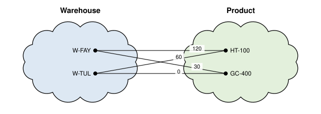
Each line of Figure 5.6 carries one quantity: 120 HT-100 hand trucks at Fayetteville, 0 GC-400 poly carts at Tulsa, and so on. A fact that belongs to a link in this way is modeled with an association class, a class whose objects are the links of an association. UML draws it as a class box attached to the association’s line by a dashed line, as in Figure 5.7.

In Figure 5.7, the association between Warehouse and Product has the multiplicity 0..* at both ends: a warehouse may stock any number of products, and a product may be stocked in any number of warehouses. StockLevel, the box on the dashed line, holds the attributes of each link, quantityOnHand and reorderPoint. Notice that StockLevel has no multiplicity of its own and no line to either class: it is the association, seen as a class. An object of StockLevel cannot exist without its link, and each link has exactly one StockLevel.
An association class is therefore more than a place to put a link’s attributes; it states a rule of the business. Compare Figure 5.8, which makes StockLevel an ordinary class with an association to each of Warehouse and Product.
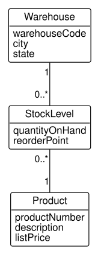
Each stock level of Figure 5.8 still belongs to one warehouse and one product. But the model no longer says that a warehouse and a product are related at all; each is related only to stock levels. And nothing in it prevents two stock levels for the same warehouse and product, each with its own quantity on hand, so that “how many HT-100 hand trucks are in Fayetteville?” would have two answers. The association class of Figure 5.7 rules that out, for the reason the next paragraph gives. Thus, an association class says that the business has at most one of its objects for each pair, and an ordinary class says that it may have several. Section 6.3.4 carries the difference into the tables: the association class’s pair of foreign keys is UNIQUE.
The rule of Section 5.4 applies to association classes with full force. Since an association holds at most one link between a pair of objects, an association class holds at most one object for each pair. That is right for stock levels, since a warehouse has one stock level for each product. It is wrong for the order line, as the following example shows.
Example 5.1 (Deciding what an order line is) The system. The distribution schema of stage D3. Customers place orders, and each order lists products, each with a quantity and a unit price.
The request. Model the order line: the fact that an order includes a quantity of a product at a price.
The quantity and the unit price are facts about a pair, an order and a product, just as a quantity on hand is. The first model therefore makes the order line an association class, as Figure 5.9 does.
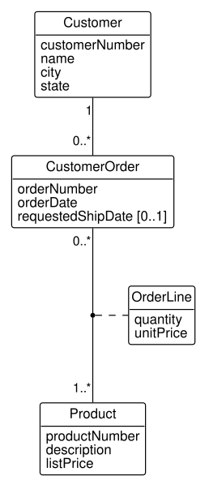
Before accepting Figure 5.9, let’s test it against the data. The model says that an order line is a link between an order and a product, so each line of an order must link that order to a different product. The lines of the first four orders of stage D3 are:
SELECT o.order_number, l.line_number,
p.product_number, l.quantity, l.unit_price
FROM distribution.order_line AS l
JOIN distribution.customer_order AS o
ON o.customer_order_pk = l.customer_order_fk
JOIN distribution.product AS p
ON p.product_pk = l.product_fk
WHERE o.order_number <= 'SO-5004'
ORDER BY o.order_number, l.line_number;| order_number | line_number | product_number | quantity | unit_price |
|---|---|---|---|---|
| SO-5001 | 1 | HT-100 | 10 | 89.00 |
| SO-5001 | 2 | GC-300 | 4 | 119.00 |
| SO-5002 | 1 | HT-200 | 6 | 139.00 |
| SO-5003 | 1 | HT-100 | 12 | 85.00 |
| SO-5003 | 2 | HT-200 | 4 | 135.00 |
| SO-5003 | 3 | GC-300 | 6 | 115.00 |
| SO-5004 | 1 | HT-100 | 20 | 89.00 |
| SO-5004 | 2 | GC-300 | 5 | 119.00 |
| SO-5004 | 3 | HT-100 | 10 | 79.00 |
Figure 5.10 draws the lines of Table 5.3 as links, with each line’s quantity on its link.
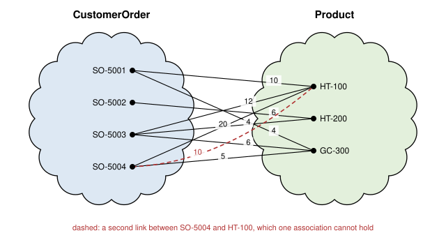
Most of the links of Figure 5.10 are fine. Order SO-5004, however, lists the HT-100 twice: 20 units on line 1 at $89.00, and 10 more on line 3 at $79.00, a discounted second lot. As links, the two lines are two connections between the same order and the same product, drawn dashed in the figure. One association cannot hold them, so an association class cannot hold the two order lines. The model of Figure 5.9 is wrong.
The repair makes the order line a class of its own, whose objects each belong to one order and refer to one product, as Figure 5.11 shows.
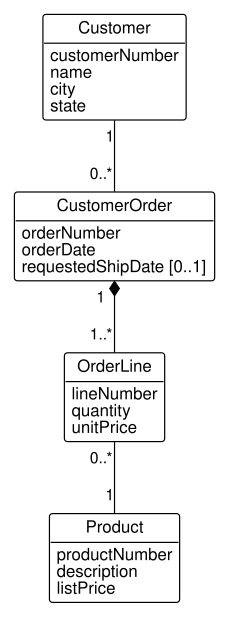
In Figure 5.11, an order has 1..* order lines, and each order line refers to exactly 1 product; a product may appear on 0..* lines. Two lines of SO-5004 are now two objects of OrderLine, each linked to the HT-100, and no pair of objects is linked twice in any association. The filled diamond at the order end says that an order line is part of its order and cannot outlive it, a relationship Section 5.6 presents.
The check. The refined model must hold every row of Table 5.3 as objects and links without breaking the rule of one link per pair. Each of the nine rows becomes one OrderLine object, linked to its order once and to its product once, so every pair of linked objects is linked once. The first model fails on exactly one pair, SO-5004 and the HT-100, and a single counterexample is enough to reject a model.
Interpretation. The business does sell one product twice on an order, at two prices, and the model must allow it. A model that forbade it would force the order clerk to combine the two lots into one line at an averaged price, losing the record of the discount.
Where it breaks. The refined model allows any number of lines for the same product on an order. If the business wanted at most one line per product, the association class of Figure 5.9 would have been the right model after all; the data decides between the models only because it holds a counterexample. Without SO-5004, the question would have to be asked of the business.
An order line has one more property the refined model does not yet capture. Its line number identifies it only within its order: every order has a line 1. A qualifier is an attribute of an association that selects among the objects linked to one object, and a qualified association is an association with a qualifier. UML draws the qualifier as a small box on the association’s end, against the class it qualifies, as in Figure 5.12.
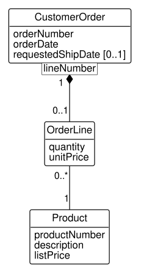
Read Figure 5.12 as follows: given an order and a line number, there is at most one order line. That is the 0..1 at the OrderLine end, where Figure 5.11 had 1..*. The qualifier reduces the multiplicity by splitting an order’s lines into groups of one, one group for each line number. That is what a composite key does in a table, and Section 6.4 maps the qualifier to the composite key (customer_order_fk, line_number) of Listing 2.3. A qualifier is often a name or a number that is unique only within something: a line number within an order, a machine number within a work center, an account number within a bank.
Association classes also serve a recursive association. The bill of materials of stage P2 records, for each assembly, how many of each component it uses. The quantity belongs to the pair, so BomLine is an association class of the recursive association between an assembly and its components. Figure 5.13 draws the links of two assemblies, the HT-100 and its wheel assembly WA-10, with a cloud for each role: on the left the manufactured parts in the role of assembly, and on the right the parts in the role of component.
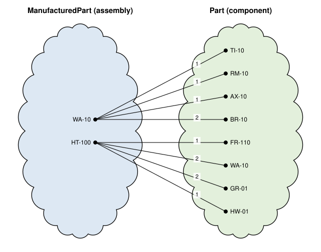
The WA-10 appears in both clouds of Figure 5.13: on the left as an assembly of four components, on the right as a component of the HT-100. It is one object playing two roles. Drawing a cloud for each role keeps the lines readable, and the role names say which end of each link is which. Each pair of assembly and component is linked once, so an association class suits the bill of materials, as it did the stock levels and did not the order lines.
5.5.1 Ternary associations
Most associations relate two classes. An association of three classes, a ternary association, has links that each connect three objects at once. The book’s database has none, but a plant that tracked labor would need one: which operator ran which machine on which work order, and for how many hours. Figure 5.14 draws such a record for three operators, three machines, and two work orders of stage P3. The objects are real, and each operator runs only machines on which the operator is certified; the runs and their hours are hypothetical.
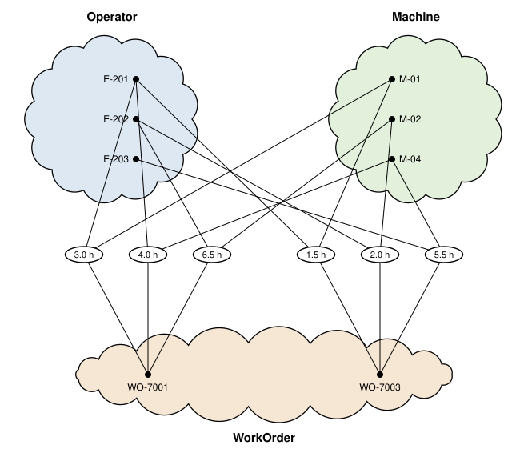
Each ring of Figure 5.14 is one link, joined to one operator, one machine, and one work order, and the hours belong to the link. Maria Lopez (E-201) ran the band saw M-01 on both work orders and the welder M-04 on WO-7001; James Carter (E-202) ran the lathe M-02 on both work orders. The question to ask of any ternary association is whether three binary associations would do: operator with machine, machine with work order, and operator with work order. Here they would not, for two reasons.
The first is the hours, which belong to the combination of all three, not to any pair. The second is that the pairs lose which combinations happened. In Figure 5.14, Maria Lopez ran M-04 (on WO-7001), M-04 was run on WO-7003 (by Linda Nguyen), and Maria Lopez worked on WO-7003 (on M-01). The three pairs, Maria Lopez with M-04, M-04 with WO-7003, and Maria Lopez with WO-7003, are all true, so joined together they imply that Maria Lopez ran M-04 on WO-7003. That run never happened. A ternary association is rare in practice, and a model that seems to need one deserves that question every time. Exercise 5.8 explores it.
Nor would an association class do. It is tempting to keep a binary association between Operator and Machine and record the work order and the hours in an association class, Run, on its links. But James Carter ran the lathe M-02 on both work orders, which is two runs for one pair of operator and machine. Recall from Section 5.4 that an association holds at most one link between a given pair of objects, so its association class holds at most one run for the pair, and the model could not record the second. The ternary association’s links are triples, and the two runs are two different triples.
UML draws a ternary association as a hollow diamond with a line to each of the three classes, as in Figure 5.15. This diamond marks the association itself and is unrelated to the diamonds of Section 5.6, which sit at the end of a line.
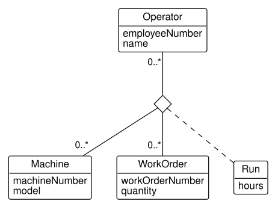
In Figure 5.15, the lines from the diamond go to Operator, Machine, and WorkOrder, with a few of each class’s attributes. Each link of the association is one ring of Figure 5.14. The multiplicity at an end of a ternary association says how many objects at that end may be linked to a given pair of objects at the other two ends. The 0..* at WorkOrder, for example, says that an operator may run a machine on any number of work orders, including none. The hours are an attribute of the association class Run, attached to the diamond by a dashed line, just as StockLevel is attached to its association’s line in Figure 5.7. One association holds at most one link among a given operator, machine, and work order, so Run holds one object, with its hours, for each triple. Section 6.3.7 maps the association to a table with three foreign keys.
5.6 Aggregation and composition
This section presents aggregation and composition, the associations that say one object is part of another.
Some associations have a special meaning: one object is part of another. An order line is part of its order; a machine is part of the work center it stands in. UML marks such an association with a diamond at the end of the whole. The diamond comes in two strengths.
Composition, drawn with a filled diamond, says that each part belongs to exactly one whole and cannot exist without it: when the whole is removed, its parts go with it. (UML allows a part to be moved from one whole to another; this book uses composition only for a part that never moves.) The order line of Figure 5.11 is composed in its order. An order line of SO-5004 is meaningless without SO-5004, it never moves to another order, and canceling the order removes its lines. The multiplicity at the whole’s end of a composition is therefore 1, which is why Figure 5.11 writes it there. The one exception is a recursive composition, a hierarchy in which a whole is itself a part of a larger whole of the same class: the object at the root of the hierarchy is part of nothing, so the whole’s end is 0..1. A part’s quality characteristics in stage Q are composed in their part in the same way as order lines.
Aggregation, drawn with a hollow diamond, is the weaker claim. UML leaves its exact meaning to the modeler; this book uses it for a part that is part of the whole but has a life of its own. Figure 5.16 shows the routing of stage P3, where a work center aggregates its machines.
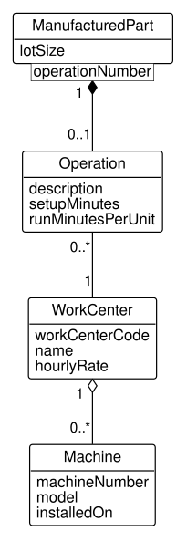
In Figure 5.16, a Machine is part of a WorkCenter, the hollow diamond, but it has a life of its own: a machine can be moved from one work center to another, so it is not created with its work center and is not destroyed with it. The 1 at the work center’s end says that a machine always stands in some work center; if the Welding work center were removed from the plan, its welders would first be moved to another work center, not scrapped. The Operation, by contrast, is composed in its ManufacturedPart, the filled diamond, and qualified by its operation number, just as an order line is qualified by its line number. An operation “Weld frame” means nothing apart from the part whose routing it belongs to.
Three questions separate the two, and they decide most cases in industrial data:
- Is the relationship “is part of”? If the phrase sounds wrong, as it does for a customer and its orders, the association is an ordinary one, whatever its multiplicity.
- Can the part exist without the whole, or move to another whole? If not, the association is a composition; if so, an aggregation.
- Does something done to the whole happen to its parts? Copying an order copies its lines; moving a work center’s floor space does not scrap its machines.
Notice what the bill of materials is not. An HT-100 “is made of” two wheel assemblies, which sounds like composition, yet BomLine in Figure 5.13 is an ordinary association with an association class. The bill of materials describes kinds of parts, a catalog: the part number WA-10 is a component of the part number HT-100. It says nothing about a particular hand truck and the particular wheels bolted to it, and the WA-10 is a component of four products at once. A composition among particular objects, this serialized truck and those two wheels, would describe an assembled product, which HG Industries does not track. Thus, before drawing a diamond, you should ask whether the objects are particular things or descriptions of kinds of things. A composition among descriptions is still right when each description belongs to one whole, as an operation belongs to the routing of one part number and a quality characteristic to one part; the bill of materials fails the test because one component is shared by many assemblies.
Chapter 6 implements composition and aggregation with the same foreign keys as ordinary associations; the difference appears in how deletions are handled (Table 2.6). A composition is where cascading a deletion is right.
5.7 Generalization
This section presents generalization, which organizes classes into more general and more specific kinds.
HG Industries makes some parts and buys the others. Every part has a part number, a description, a unit of measure, and a standard cost. A part the company makes also has a lot size, the quantity it makes at once, and a routing of operations; a part it buys has a lead time, the days a supplier needs to deliver, and no routing. Generalization is the relationship between a general class and the more specific classes that are kinds of it. The general class is the superclass, Part, and the specific classes are its subclasses, ManufacturedPart and PurchasedPart. UML draws it as a line with a hollow triangle at the superclass, as in Figure 5.17.
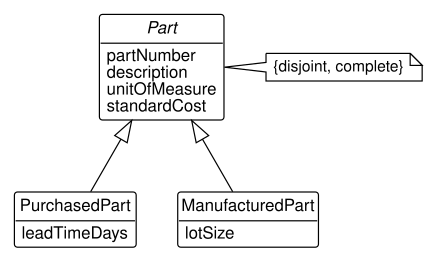
A subclass inherits everything the superclass has: its attributes, its associations, and its meaning. A manufactured part is a part, so it has a part number, a description, a unit of measure, and a standard cost, and it adds a lot size. In terms of clouds, a subclass’s objects are a subset of its superclass’s objects. Figure 5.18 draws the eighteen parts of stage P1 inside the cloud of Part, divided between the two subclass clouds.
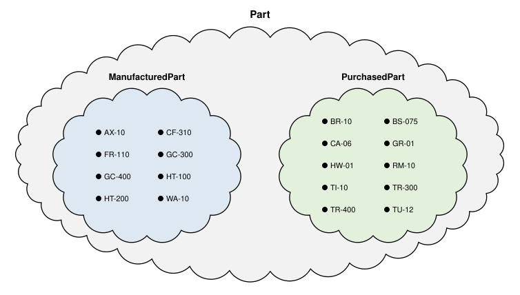
Every dot of Figure 5.18 lies in one of the inner clouds, and no dot lies in both. Those two facts are what the note {disjoint, complete} in Figure 5.17 says. Disjoint means that no object belongs to two subclasses: no part is both made and bought. Complete means that every object of the superclass belongs to some subclass: there is no part that is neither. Both are rules of the business, and both could be otherwise. A part bought from a supplier in one season and made in the plant in another would break disjoint; a part not yet classified would break complete. UML names the opposite of each: {overlapping} allows an object to belong to more than one subclass, and {incomplete} allows an object of the superclass to belong to none.
Generalization earns its place when the subclasses differ in attributes or in associations. Here they differ in both. Only a manufactured part has a routing, so the composition of Figure 5.16 attaches to ManufacturedPart, not to Part. In the bill of materials, only a manufactured part can be an assembly, while any part can be a component, so the assembly end attaches to ManufacturedPart and the component end to Part (Figure 5.13). Without the subclasses, the model could not say either rule.
A superclass whose every object belongs to some subclass, as {complete} says of Part, has no objects of its own. Such a class is called an abstract class, and UML writes its name in italics. An abstract class still earns its place: it holds what the subclasses share, and an association drawn to it, such as the component end of the bill of materials, accepts an object of any subclass. A class may also have more than one superclass, which is called multiple inheritance: a part that is both bought and made, in a model that dropped {disjoint}, could belong to a class that is a subclass of both. The book’s databases have no case of it, and a model is usually clearer without it, since each generalization should divide its superclass by one question, such as “is it made or bought?”.
Generalization is often misused for roles. The quality department’s inspections are carried out by operators: Linda Nguyen and Robert Hayes inspect coating thickness (Example 4.3). It is tempting to add a subclass Inspector of Operator. But inspecting is something an operator does in an association with inspections, not a kind of operator. An operator may inspect one day and not the next, and nothing about the operator changes when the operator does. The quality model therefore draws an association between Inspection and Operator, named inspectedBy, in which an operator plays the part of inspector. Thus, you should use a subclass for a kind of thing that stays that kind, with facts of its own, and a role name for a part that an object plays in an association.
5.8 Building a class model
This section presents a method for building a class model from the documents of Section 5.2: finding the classes, testing them, and then finding their attributes and associations.
The method is old and plain, and it works. Its steps come from the object-oriented methods on which UML was built (Rumbaugh et al. 1991; Starr 1996; Larman 2004):
- Find candidate classes. List every noun and noun phrase in the problem statement and the use case descriptions. Add the things that domain knowledge says are missing, and look through the kinds of thing that industrial systems usually record: physical things (parts, machines), descriptions or specifications of things (a product, a part’s characteristics), places (warehouses, work centers), transactions and their line items (orders and order lines), organizations, and records of events (inspections, shipments).
- Eliminate the candidates that are not classes. A candidate goes if it is redundant, another name for a class already listed; irrelevant, outside the problem statement’s boundary; vague; an attribute, a fact about something else; an operation, something done rather than something remembered; a role that some class plays in an association; derived, computable from what is recorded; or an implementation detail, such as a file or a screen.
- Test the classes that remain. Each should pass four tests (Starr 1996). The uniformity test: every object of the class has the same kinds of facts and relationships. The more than a name test: the class has facts of its own beyond a name; otherwise it is an attribute. The or test: a description full of “or” (“a customer is a store or a supplier or a farm”) may hide two classes with nothing in common. The more than a list test: a class defined only by listing its members (“the HT-100 and the HT-200”) is not yet understood.
- Find the attributes. Look for nouns that follow a possessive (“the order’s date”, “the quantity of each line”) and for adjectives, which often name the values of an enumeration (“open”, “rush”). Ask what every object of the class has, and what the business must know to tell one object from another. An attribute that can be computed from others is a derived attribute; leave it out, or mark it as derived, since storing it records a fact twice.
- Find the associations. Look for verbs and prepositions that connect two classes: a customer places an order, a shipment leaves from a warehouse. The verb should describe structure that lasts, not an action of a moment. Table 5.4 lists the kinds of association that recur (Larman 2004), with examples from the book’s database. Each association then gets its multiplicities, and, where its links carry facts, an association class (Section 5.5).
- Write the data dictionary, the descriptions of Section 5.3, for every class, attribute, and association.
| Kind of association | Example |
|---|---|
| A is a line item of a transaction B | an order line of a customer order |
| A is a transaction related to another transaction B | a shipment of a customer order |
| A takes part in transaction B | a customer in its orders |
| A is a physical part of B | a machine of a work center |
| A is stored in, or located at, B | a product’s stock in a warehouse |
| A describes B | a characteristic of a manufactured part |
| A is recorded in B | a measurement in an inspection |
| A is qualified to use B | an operator certified on a machine |
The steps are not done once in order. Eliminating a candidate often turns it into an attribute of another class, and finding an association often shows that its links carry facts, which adds an association class. The following example takes the steps on the problem statement of Section 5.2.
Example 5.2 (Building the shipping model of stage D5) The system. HG Industries’ order and shipment records, described by the problem statement of Section 5.2 and the use cases of Figure 5.2.
The request. The distribution department asks for a class model of the records it described: what must be stored to enter orders, ship them from either warehouse, report what remains open, and know when stock is low.
Let’s begin with step 1. The nouns of the problem statement and the use case Ship an order (Table 5.1) give the candidates. Step 2 then decides each one, and Table 5.5 records the decisions and their reasons.
| Candidate | Decision | Reason |
|---|---|---|
| HG Industries | eliminate | irrelevant: the owner of the records, not something they record |
| hand truck, garden cart | eliminate | a list of instances of product |
| hardware store, farm supplier, garden center | eliminate | kinds of customer with the same facts |
| customer | class Customer |
|
| customer order | class CustomerOrder |
|
| line (of an order) | class OrderLine |
a line item of a transaction |
| product | class Product |
|
| quantity, price | attribute | of an order line |
| warehouse | class Warehouse |
|
| Fayetteville, Tulsa | attribute value | the city of a warehouse |
| stock | class StockLevel |
a fact about a warehouse and a product together |
| reorder point | attribute | of a stock level |
| shipment | class Shipment |
|
| carrier | attribute | of a shipment; no facts of its own here |
| date (of a shipment) | attribute | of a shipment |
| quantity (of each line it carries) | class ShipmentLine |
a fact about a shipment and an order line together |
| open order, quantity remaining | eliminate | derived from the order lines and the shipments |
| sales clerk, shipping clerk, sales manager | eliminate | actors, who use the records but are not recorded |
| sales office | eliminate | irrelevant: an organization the records do not describe |
| phone, e-mail | eliminate | irrelevant: how an order arrives, not a fact about it |
| invoicing, payment | eliminate | outside the boundary the problem statement drew |
Step 3 tests the eight classes that remain. Each passes the uniformity test: every shipment, for example, has a date, a carrier, and a warehouse. The carrier fails the more than a name test, since the problem statement records nothing about a carrier but its name, so it stays an attribute, as Section 5.3 argued it should. A description of a customer as “a hardware store or a farm supplier or a garden center” raises the or test, but the statement records the same facts for all three, so one class Customer suffices.
Steps 4 and 5 add the attributes and associations. The verbs of the problem statement give the associations: a customer order is placed by a customer; it has lines, each for a product; a warehouse keeps a stock of each product; a shipment is for one order, leaves from one warehouse, and carries quantities of order lines. Most match a kind in Table 5.4. A stock level is a fact about a warehouse and a product together, so it is the association class of Figure 5.7. The quantity a shipment carries of an order line is likewise a fact about a shipment and an order line together, and a shipment carries a given order line at most once, with one quantity. Thus, ShipmentLine is the association class of an association between Shipment and OrderLine, not an ordinary class composed in the shipment. Compare the order line of Section 5.5, which had to be an ordinary class because an order may list one product twice. A shipment has at least one order line, and an order line is carried by any number of shipments, none while it waits and several when it ships in parts.
Step 4 also adds what every object needs although no document names it as a noun. Each class gets the business identifier by which the business tells its objects apart: the shipment, warehouse, product, customer, and order numbers and codes printed on the company’s documents. And the order’s dates, the product’s list price, and the city and state of customers and warehouses are already kept in the order records of stages D2 to D4, which the distribution department brings to the model. Figure 5.19 draws the result.
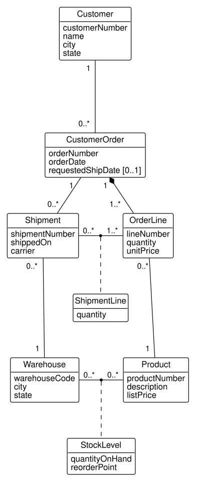
Step 6 writes the data dictionary. An association’s entry gives its name, its classes, its multiplicities, and the reason for each:
Shipment leaves from Warehouse. Each shipment leaves from exactly one warehouse, since it is loaded at one dock; a warehouse has any number of shipments, including none, as a newly opened warehouse would.
An attribute’s entry gives its meaning and its domain specification, the rule that says which values are allowed. A domain is specified in one of four ways: by an enumeration of its values, by a citation of an authority that defines them, by an acceptance rule, or by a range with its units. For example:
- StockLevel.quantityOnHand. The number of units of the product on the warehouse’s shelves, as last counted or updated by a shipment. Domain: a whole number of units, from 0 up (a range).
- Customer.state. Domain: a two-letter state abbreviation of the U.S. Postal Service (a citation).
- Shipment.carrier. Domain: the carrier’s name as printed on the shipping papers, or Customer pickup when the customer collects the goods (an acceptance rule).
A domain written as “an integer” would say how the value is stored, not what it may be. The range “a whole number of units, from 0 up” says both what a quantity means and the constraint CHECK (quantity_on_hand >= 0) that implements it in stage D4.
The check. Every requirement of Section 5.2 should trace through Figure 5.19, as Section 5.9 will do for the production model. The quantity of each line not yet shipped is an order line’s quantity less the quantity of its shipment lines, a path of one association; the stock to reorder compares a stock level’s two attributes.
Interpretation. The model the method produced is the one the book’s database has implemented since stage D5. Its eight classes came from about twenty nouns, and each eliminated noun has a recorded reason, which is what lets the department check the model: a manager who expected carriers to be tracked can see that they were judged a name only, and ask for more.
Where it breaks. The method finds only what the documents mention. A fact the problem statement left out, such as a shipment’s weight or the dock it left from, will be missing from the model, and no step of the method will notice. The documents, like the requests of Section 5.9, are part of what the business must review.
5.9 Reviewing a class model
This section presents how to review a class model against the business it is meant to serve, before any table is built from it.
A class model is reviewed in two ways. The first is a check of the model against itself, a list of questions every model should survive:
| Question | What a failure looks like |
|---|---|
| Does each class have a description that decides membership? | Two classes for one thing; a class that is only a name |
| Is each attribute a single fact about its own class? | A list in one attribute; a fact about a pair placed in one of the pair |
| Is any attribute an identifier or a reference? | customer_pk or customer_fk in a class box |
| Does each association read correctly in both directions? | A multiplicity written at the wrong end |
| Is each multiplicity a rule of the business? | A 1 that the business sometimes breaks |
| Does a cloud instance diagram of real data fit the model? | Two links between one pair of objects |
| Is each subclass a kind, not a role? | A subclass an object moves into and out of |
The second way is a check against the requests the database must answer, the queries of Chapter 3 and Chapter 4 turned into questions about the model. For each request, trace a path of associations from the classes the request names to the facts it needs, as Example 2.2 traced a path of foreign keys. A request with no path means the model is missing something. The following example reviews the production model that way.
Example 5.3 (Reviewing the production model against planning requests) The system. The production class model of stage P3, in Figure 5.20.

The request. The production planner will ask two things of the database. First, which machines can perform each operation of a part’s routing, and which operators are certified to run them? Second, for a finished work order, which machine and operator performed each of its operations, and for how long?
Let’s trace the first request through Figure 5.20. A ManufacturedPart has its Operations through the qualified composition; each operation is performed in one WorkCenter; the work center aggregates its Machines; and each machine has its certified Operators through the association class Certification. The path exists, so the model can answer the request, and the tables built from it do. For operation 20 of the hand truck frame, the query follows the same path as a chain of joins:
SELECT m.machine_number, m.model, o.name, c.level
FROM production.operation AS op
JOIN production.part AS p
ON p.part_pk = op.manufactured_part_fk
JOIN production.machine AS m
ON m.work_center_fk = op.work_center_fk
LEFT JOIN production.certification AS c
ON c.machine_fk = m.machine_pk
LEFT JOIN production.operator AS o
ON o.operator_pk = c.operator_fk
WHERE p.part_number = 'FR-110'
AND op.operation_number = 20
ORDER BY m.machine_number, o.name;| machine_number | model | name | level |
|---|---|---|---|
| M-04 | MIG welder MW-250 | Linda Nguyen | 3 |
| M-04 | MIG welder MW-250 | Maria Lopez | 2 |
| M-05 | MIG welder MW-250 | Aisha Patel | 1 |
| M-05 | MIG welder MW-250 | Linda Nguyen | 3 |
| M-07 | Robotic welder RW-6 | NULL | NULL |
The second request fails the trace. A WorkOrder is linked to the ManufacturedPart it makes, and through it to the part’s operations, but nothing links a work order to a machine or an operator. The model records what can be done, the routing and the certifications, and what was ordered, the work orders, but not what was done.
The check. The joins follow the associations of Figure 5.20 in the order the trace found them. The join from the operation to its machines passes through the work center without naming it, by matching the two foreign keys that refer to it, and the left joins keep a machine that has no certified operator. The operation is performed in the Welding work center, which has three machines, so the result must show at least three machines; M-04 and M-05 each have two certified operators, and M-07 has none, which gives five rows.
Interpretation. For the first request, the review confirms the model and repeats a finding of Exercise 3.16: the robotic welder M-07 has no certified operator. For the second, the review finds a missing piece: a record of each run, which operator ran which machine for which operation of which work order, and for how long. That is the ternary association of Figure 5.14, extended with the operation, and promoted to a class Run with an association to each of the classes it connects. Adding it is a decision for the business: recording runs costs a clerk’s time on the floor.
Where it breaks. A review against requests can only find what the requests ask for. A request nobody thought to list, such as the scrap produced by each run, will not be traced, and the model will lack it. The list of requests is therefore part of what the business must review.
A model that survives both checks is ready to be turned into tables, which Chapter 6 does. A model that fails either is far cheaper to repair now than after the tables are loaded with data.
5.10 Reading other notations
This section presents how to read a data model drawn in the crow’s foot notation, which you will meet in other books and in many database tools.
UML is not the only notation for data models. The entity-relationship diagram (ERD) is older and widespread, and its most common form is the crow’s foot notation, named for the three-pronged mark that stands for “many”. Figure 5.21 draws the refined model of stage D3 (Figure 5.11) in crow’s foot notation.
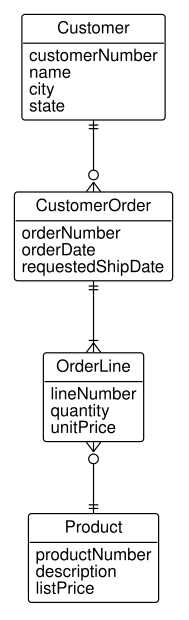
Most of Figure 5.21 maps one to one onto the class model. A box is an entity type, the ERD’s name for what UML calls a class, with its attributes listed below its name. A line is a relationship, the ERD’s association. The difference is in how the multiplicity is written: a pair of marks at each end instead of numbers. The mark nearer the box is the maximum, a bar for one and the crow’s foot for many; the mark farther from the box is the minimum, a bar for one and a circle for zero. The four combinations are:
| Marks (farther from the box, nearer the box) | Read as | UML multiplicity |
|---|---|---|
| bar, bar | exactly one | 1 |
| circle, bar | zero or one | 0..1 |
| circle, crow’s foot | zero or more | 0..* |
| bar, crow’s foot | one or more | 1..* |
Read Figure 5.21 with Table 5.8, and it says nearly all that Figure 5.11 says. The line from Customer to CustomerOrder has two bars at the customer and a circle with a crow’s foot at the order: each order belongs to exactly one customer, and each customer has zero or more orders. The marks sit at the same ends as UML’s numbers do, so the reading rule of Section 5.4 applies unchanged.
Some UML constructs have no direct crow’s foot equivalent. An association class is drawn as an ordinary entity type, called an associative entity, between the two it connects; a qualifier has no mark at all and appears only as a key attribute; aggregation and composition have no diamonds; and an optional attribute has no mark, so requestedShipDate [0..1] in Figure 5.11 appears in Figure 5.21 as plain requestedShipDate. Crow’s foot tools also often show foreign keys as attributes, which makes their diagrams closer to the schema diagram of Figure 2.2 than to a class model. Appendix D translates each construct in both directions, with a procedure for converting a whole model. Other notations exist, including the original entity-relationship notation of Peter Chen, with diamonds for relationships; this book does not use them, and a reader who meets one can translate it by the same method.
5.11 Summary
A class model is the design, and tables are one implementation of it. It describes the things a business records and how they are related, in the business’s words, without keys or NULLs. Chapter 6 turns it into tables.
A class model starts from what the business says it needs. A problem statement bounds the system, use cases name its functions and the actors who start them, and requirements, each written as what the system shall do, say what it must answer. Most of the model’s nouns appear first in these documents.
A class is a set of objects, and a cloud instance diagram draws the set. An object has an identity of its own; a class describes objects with the same kinds of facts and relationships. Attributes record the facts, drawing values from domains, and leave identifiers and references to the implementation.
How a value is used decides how a value with parts is modeled. A value used whole is one attribute, a value whose parts are used separately is split into attributes, and a value that repeats or is shared becomes a class of its own. Each becomes one column, several columns, or a table.
An association is a set of links, and multiplicity is counted. A link connects two particular objects, and the multiplicity at an end of an association says how many lines may leave each object at the other end. Read every association as two sentences, and remember that one association holds at most one link between a given pair of objects.
Facts about a pair belong to the link. An association class holds them, one object per link, which suits stock levels and shipment lines and fails the order lines of an order that lists a product twice. A qualifier selects among the objects linked to one object, as a line number does within an order, and becomes a composite key.
A diamond says that one object is part of another. Composition, the filled diamond, makes a part belong to one whole for life, as an order line belongs to its order; aggregation, the hollow diamond, is left to the modeler by UML, and this book uses it for a part with a life of its own, as a machine is part of a work center. A bill of materials relates kinds of parts, not particular objects, and is an ordinary association.
A subclass is a kind of its superclass, and inherits all of it. Its objects are a subset of the superclass’s objects, a cloud inside a cloud, and {disjoint, complete} states how the subsets divide the whole. Use a subclass for a kind of thing with facts or associations of its own, and a role name for a part an object plays.
A model is built by finding, eliminating, and testing candidates. The nouns of the documents are the candidate classes; each is kept, or eliminated as redundant, irrelevant, vague, an attribute, an operation, a role, derived, or an implementation detail, with the reason recorded. The classes that remain pass the uniformity, more than a name, or, and more than a list tests; verbs give the associations, and the data dictionary gives every attribute a domain specification.
A model is reviewed against itself and against its requests. The questions of Table 5.6 check the model’s internal soundness, and tracing each request through the associations finds what the model cannot answer, before any table is built.
Other notations say the same things with different marks. Crow’s foot notation writes multiplicity as a pair of marks at each end of a line, at the same ends as UML’s numbers; association classes, qualifiers, and diamonds need translation, which Appendix D provides.
Chapter 6 turns the class models of this chapter into the tables of the book’s database, following Blaha and Premerlani’s rules for each construct.
5.12 Exercises
Exercise 5.1 Match each term on the left with the phrase on the right that defines it.
| Term | Definition |
|---|---|
| a. object | 1. a connection between two particular objects |
| b. class | 2. the set of a class’s objects at a moment |
| c. extension | 3. how many objects may be linked to one object at the other end |
| d. link | 4. a particular thing the business needs to remember |
| e. multiplicity | 5. an attribute of an association that selects among linked objects |
| f. qualifier | 6. a description of a group of objects with the same kinds of facts and relationships |
Exercise 5.2 Using Figure 5.7, write each association as two sentences, one in each direction, of the form “each … is linked to …”. Then say, for each end, whether an object may exist without a link at that end.
Exercise 5.3 At stage D5, each shipment leaves from one warehouse, and the two warehouses have made eleven shipments between them.
- Draw a cloud instance diagram of the warehouses, the shipments SH-9001 to SH-9005, and the links between them. The query of Exercise 3.11 shows how to find each shipment’s warehouse.
- Read the multiplicity at each end from your diagram.
- In the sample, every warehouse has at least one shipment. Which minimum is a rule of the business that the diagram cannot show? Explain.
Exercise 5.4 The Shipment class of stage D5 records its carrier as the attribute carrier. The distribution manager now wants to record each carrier’s contract rate per pound and its dispatcher’s phone number, and to keep a list of approved carriers that includes carriers not yet used. Treat a customer pickup as one of the carriers on the list.
- Should the carrier remain an attribute? Give the test of Section 5.3 that decides it.
- Sketch the change to the class model, with multiplicities, and read the new association both ways.
Exercise 5.5 The production schema of stage P3 records, for each operator certified on a machine, the date of the certification and its level.
- Explain why neither the date nor the level is an attribute of
Operatoror ofMachine. - Model the certification with an association class, and give the multiplicities.
- Could an operator be certified on the same machine twice, say at level 1 in 2020 and at level 3 in 2024? What would the association class model say, and what would the business need to decide?
Exercise 5.6 The plant extends the certifications of Exercise 5.5 with two more facts. Each certification is signed off by an operator who holds a level 3 certification on the same machine. And each machine has one lead operator, responsible for its upkeep; an operator may lead any number of machines, or none.
- Draw a class model in which
Certificationis an association class ofOperatorandMachine, and add an association for the operator who signed each certification off and one for each machine’s lead. Name the roles and give every multiplicity. - Draw a second model in which
Certificationis an ordinary class, associated withOperatortwice and withMachineonce. - Four certifications of stage P3 are to be recorded with their sign-offs: Maria Lopez (E-201) on M-04 and Aisha Patel (E-205) on M-05, both signed off by Linda Nguyen (E-203); Robert Hayes (E-204) on M-01, signed off by Maria Lopez; and Linda Nguyen on M-06, signed off by Robert Hayes. Linda Nguyen leads M-04 and M-05, Maria Lopez leads M-01, and Robert Hayes leads M-06. Draw a cloud instance diagram of these facts, in the manner of Figure 5.6, for each model.
- Name a set of objects and links that the model of part (b) allows and the model of part (a) forbids. Would the plant want it?
- Neither model enforces the rule that the signer holds a level 3 certification on the same machine. State that rule in words beside the diagram, and say what else a signer must not be.
Exercise 5.7 HG Industries decides to record where each product is stored within a warehouse. Each warehouse is divided into bins, identified by a bin code such as A-03 that is unique within its warehouse; two warehouses may both have a bin A-03.
- Model warehouses and bins without a qualifier, and give the multiplicities.
- Model them with a qualifier, and explain how the multiplicity at the bin end changes.
- What composite key would the qualifier become in a table?
Exercise 5.8 Consider the six hypothetical runs of Figure 5.14.
- List the links as triples (operator, machine, work order), with their hours.
- Replace the ternary association with three binary associations (operator with machine, machine with work order, operator with work order), and list the links each would hold.
- List every triple consistent with the three binary associations, that is, every operator, machine, and work order whose three pairs are all links of part (b). Mark the triples that are not runs.
- Remove Maria Lopez’s run of M-01 on WO-7003 from the data. Show that every triple consistent with the binary associations is now a real run. Does that make the binary model right for these runs? Explain.
- Where would the hours be recorded in the binary model? Explain why that is a problem.
Exercise 5.9 For each association, say whether it is a composition, an aggregation, or an ordinary association, and give the question of Section 5.6 that decides it.
ManufacturedPartand itsOperations (stage P3).WorkCenterandMachine(stage P3).CustomerandCustomerOrder(stage D2).ManufacturedPartandPartin the bill of materials (stage P2).Partand its qualityCharacteristics (stage Q).
Exercise 5.10 Using Figure 5.17 and Figure 5.18:
- List the attributes an object of
PurchasedParthas, and say where each comes from. - Why does the
assemblyend of the bill of materials attach toManufacturedPartrather thanPart? (Figure 5.20 shows the bill of materials.) - HG Industries considers buying wheel assemblies from a supplier when the plant is at capacity, while still making them at other times. Which of
{disjoint, complete}would that break, and what are two ways to change the model?
Exercise 5.11 For each proposal, say whether it should be a subclass or a role name, and why.
Inspector, a subclass ofOperator, for the operators who inspect parts.RetailCustomerandWholesaleCustomer, subclasses ofCustomer, where wholesale customers have a credit limit and a sales representative and retail customers pay on order.ReferringCustomer, a subclass ofCustomer, for customers who have referred another customer to HG Industries.
Exercise 5.12 A new analyst proposes the following model of part of stage D5, written as text:
Product(productNumber, description, listPrice, fayetteville_on_hand, tulsa_on_hand, reorder_point)Warehouse(warehouse_pk, warehouseCode, city, state)Shipment(shipmentNumber, shippedOn, carrier, warehouse_fk, customerName)
Review it with the questions of Table 5.6. List every problem you find, say which question finds it, and describe the repair.
Exercise 5.13 HG Industries’ quality department inspects lots of manufactured parts. An inspector measures a sample of parts from a lot against the part’s characteristics, each with a lower and an upper specification limit, and counts defects by type. The department wants to know which lots failed, which characteristics drift, and whether inspectors agree.
- Write a problem statement for the department’s inspection records, answering the six questions of Section 5.2, and say what the system will not do.
- Name the actors and at least three use cases, and draw the use case diagram.
- Write the description of one use case, in the form of Table 5.1.
- Write three requirements in the form “The system shall …”, at least one of which is a request the model must answer.
Exercise 5.14 The receiving dock writes:
Parts that HG Industries buys arrive from suppliers by truck. Each delivery brings the parts of one purchase order, though an order may arrive in several deliveries. A purchase order lists, for each part, the quantity ordered and the price agreed. At the dock, a receiving clerk counts each part in the delivery and records the quantity received and any quantity rejected as damaged. Accounts payable pays suppliers from the receipts, which this system does not handle. The buyer needs to know which purchase orders are still open and how often each supplier delivers late.
- List every candidate class in the statement.
- Decide each candidate as Table 5.5 does: a class, an attribute, or eliminated, with the reason.
- Apply the four tests of step 3 to the classes you kept. Which candidate is closest to failing the more than a name test, and what would the buyer have to want recorded for it to pass?
- Name each association, its kind from Table 5.4, and its multiplicities, and draw the class model.
- Which requirement in the statement does your model answer with a derived value rather than a stored one?
Exercise 5.15 Write a domain specification for each attribute, and say which of the four ways (enumeration, citation, acceptance rule, range) you used.
PurchasedPart.leadTimeDays, the days a supplier needs to deliver.Customer.state.Inspection.result, an attribute the department proposes to add, which records whether a lot was accepted or rejected.Measurement.measuredValueof a diameter, measured in inches.- An analyst wrote, for
OrderLine.unitPrice, “Domain: a decimal number.” Say what is wrong with it, and write a better specification.
Exercise 5.16 A supplier’s catalog system is drawn in crow’s foot notation with three entity types, Supplier, CatalogItem, and PurchasedPart. The line from Supplier to CatalogItem has two bars at Supplier and a bar with a crow’s foot at CatalogItem. The line from CatalogItem to PurchasedPart has a circle with a crow’s foot at CatalogItem and two bars at PurchasedPart. CatalogItem has the attributes supplierPartNumber and unitPrice.
- Translate each line into a UML association with multiplicities, and read each both ways.
CatalogItemconnects a supplier and a purchased part and carries a price. Should it be an association class of an association betweenSupplierandPurchasedPart? Consider whether a supplier might list the same part twice, say in two package sizes.
Exercise 5.17 HG Industries wants to record machine maintenance. Model the following in a class diagram, with multiplicities, and write a class description for each new class.
Each machine receives preventive maintenance on a schedule: a maintenance plan for a machine lists tasks, each with an interval in days, and a task is numbered within its plan. When a technician performs a task, the plant records the date, the technician, and the minutes it took. Technicians are employees but not operators, although an operator may be trained as a technician. A machine may also break down; each breakdown is recorded with its start and end times and the technician who repaired it.
Say which parts of your model are compositions, which multiplicities are decisions the business must confirm, and how you modeled “an operator may be trained as a technician”.
The exercises from here on model settings outside HG Industries, each a short statement of business rules in plain English. Model each with the constructs of this chapter, give every multiplicity, and read each association both ways before you trust it. Where a statement leaves a rule open, say what you assumed. Chapter 6 maps several of these models to tables, starting from the instructor’s model of each.
Exercise 5.18 A plant’s tool crib lends tools to its mechanics. Each tool has a tool number, unique in the crib, a description, and the date it was purchased. Each mechanic has an employee number and a name. When a mechanic checks out a tool, the crib records the time; when the tool comes back, it records the return time. Over its life a tool is checked out many times, by many mechanics, and a mechanic often checks out the same tool again. A tool is out with at most one mechanic at a time, and a mechanic may have several tools out at once. New tools have never been checked out.
- Model the tools, the mechanics, and the checkouts, with multiplicities.
- Explain why a checkout cannot be an association class of an association between
ToolandMechanic. - Which rule of the statement can no multiplicity in the diagram state? How would you record it?
Exercise 5.19 A quality department keeps its gauges calibrated. Each gauge has a serial number, a type (such as micrometer or caliper), a measuring range, and a calibration interval in days. Calibrations are done by outside laboratories, each with a name and an accreditation number. Each calibration of a gauge records the date, the result (passed, adjusted, or failed), and the certificate the laboratory issued. A laboratory numbers its certificates itself, so two laboratories may both issue a certificate numbered 1047. A gauge may be calibrated by different laboratories over the years, and a newly bought gauge has not yet been calibrated. A laboratory is recorded only once it has calibrated a gauge.
- Model the gauges, laboratories, and calibrations, with multiplicities.
- Model the certificate number with a qualifier, and say what the qualifier states that an attribute of
Calibrationwould not. - The department also wants each gauge’s next due date. Is it an attribute to record? Explain.
Exercise 5.20 A machining cell pulls parts with kanban containers. Give the multiplicity at each end of each association, and read each association both ways.
- Each container is dedicated to one part number. Each part number circulates in at least two containers, since the cell runs a two-bin system.
- Each container belongs to the loop of one cell; a cell’s loop may hold containers of many part numbers, and a new cell has none yet.
- A kanban card is printed for one container and is never moved to another. A container carries at most one card; a new container has none until its card is printed.
- Draw the class model of parts (a) to (c), with
PartNumber,Container,Cell, andCardand attributes of your choosing. - Should the card be a class of its own, or attributes of
Container? Give one argument each way.
Exercise 5.21 A plant’s occupational health clinic schedules appointments. Each appointment is for one employee, with one provider (a nurse or a physician), in one exam room, at a date and time, for a number of minutes, with a reason and a status (scheduled, completed, or missed). An employee has many appointments over the years, often with the same provider in the same room.
- Model the employees, providers, exam rooms, and appointments.
- A classmate models the appointment as a ternary association of
Employee,Provider, andExamRoom, with an association class. Explain, with the rule of Section 5.4 about links, why that model cannot record the clinic’s appointments. - Each provider has a home exam room, and a room is the home of at most one provider. Add this to your model.
Exercise 5.22 A project scheduler records projects and their activities. Each project has a name and a start date. Each activity belongs to one project, has an identifier unique within its project (such as A, B, C), a description, and a duration in days. An activity may have predecessors, activities that must finish before it can start, and it may be a predecessor of several other activities; the first activities of a project have no predecessors. Each precedence may carry a lag, a number of days that must pass between the end of the predecessor and the start of its successor.
- Model projects, activities, and precedences, with role names on the recursive association.
- Where does the lag belong, and why?
- A precedence must join two activities of the same project, and no chain of precedences may lead from an activity back to itself. Can the diagram state either rule?
Exercise 5.23 A company records the places in its plants: each site has buildings, each building has areas, and each area may have production lines. Every building is in one site, every area in one building, and every line in one area. A site has at least one building, and a building at least one area.
- Model the four levels as four classes.
- Model the same places with one class,
Location, and a recursive association. - The company acquires a plant whose areas are divided into zones, and zones into lines. What must change in each model?
- Which model states a request for everything inside a building as one idea, whatever the depth, and which lets SQL answer it without a recursive query? Recall Section 4.6.
Exercise 5.25 A port’s container yard is divided into blocks, each identified by a block code within the yard. A place for a container in a block is a slot, identified by its bay, row, and tier numbers together; a slot may be refrigerated. Each shipping container has a container number, a size in feet, and an owner, and occupies at most one slot while in the yard; a slot holds at most one container.
- Model the yard, its blocks, slots, and containers, using qualifiers.
- Which associations are compositions? Apply the questions of Section 5.6.
- A qualifier of three attributes, bay, row, and tier: what composite key would it become in a table?
Exercise 5.26 A hospital’s emergency department records each patient visit: the arrival time and, when the patient leaves, the departure time. On arrival a nurse assigns the visit a triage level from 1 (resuscitation) to 5 (non-urgent); each level has a description and a target number of minutes within which the patient should be seen. During a visit a patient may be moved between beds, and may return to a bed used earlier in the same visit; each move records when the patient took the bed and when the patient left it. Each bed has a code and a type (such as trauma or general).
- Model patients, visits, triage levels, beds, and bed assignments.
- Is the triage level an attribute of
Visitor a class? Give the argument for your choice. - Why is the bed assignment a class and not an association class between
VisitandBed?
Exercise 5.27 An equipment rental yard rents units of equipment, each unit identified by its serial number and of one equipment type (such as a 20-foot scissor lift). Rates depend on the type and the rental period: a scissor lift rents for one amount per day, another per week, and another per month, and every unit of the type rents at the same rates. Customers rent units; each rental is of one unit and records the date out, the date due, the date returned, and the rental period it is charged at.
- Model equipment types, units, rate periods, rates, customers, and rentals.
- Where does the rate’s amount belong, and why is it not an attribute of
EquipmentUnit? - The distinction between a type and its units recurs in many settings. Name one other pair from this chapter’s exercises or from HG Industries.
Exercise 5.28 A fleet manager tracks the plant’s vehicles. Every vehicle has a unit number, a make, a model year, and an hour meter. Trucks and vans are road vehicles, with a license plate, a registration expiry date, and an odometer; trucks also have a payload and a number of axles, and vans a cargo volume. Forklifts are not road vehicles; they have a lift capacity and a fuel type. Every vehicle is a truck, a van, or a forklift, and never more than one.
- Model the vehicles with generalization, placing each attribute on the highest class it applies to, and state the constraints.
- Some vehicles are leased and some are owned. Should
LeasedVehiclebe a subclass? Recall Exercise 5.11.
Exercise 5.29 For each pair, say whether the association is a composition, an aggregation, or an ordinary association, and give the question of Section 5.6 that decides it.
- A pallet and the cartons stacked on it.
- An aircraft and its engines, which are removed for overhaul and installed on other aircraft.
- An invoice and its lines.
- A building and its rooms.
- A maintenance crew and its technicians.
- A kit and the parts packed in it for an assembly station.
The next six exercises model one system, a transit agency’s monitoring system, adapted from a Transportation Research Board study (Rossetti 1999). Each models one part of it; together they cover its routes, stops, schedules, operations, fares, and the record of each trip a vehicle makes.
Exercise 5.30 A transit agency runs bus routes. Each route has a number, a name, a color on the system map, and the distance the agency publishes for it. The places on the network are points, each with a name and a latitude and longitude. A route is a sequence of segments, in the order the bus travels them; each segment starts at one point and ends at another and has a length. Each segment belongs to exactly one route; two routes that run along the same street have segments of their own. A point may lie on many routes, and a route has at least one segment. Points of interest, such as a shopping center or a hospital, each with a name and an address, are recorded with the points near them; a point of interest is near at least one point.
- Model routes, segments, points, and points of interest.
- A route’s points, in order, are also wanted. Should the model have an association between
RouteandPoint? Explain what it would add and what it would cost. - Read the association between
SegmentandPointboth ways, for each role.
Exercise 5.31 Some points of the network of Exercise 5.30 are access points, where passengers may board or leave the bus; the others are places such as timing points and turnarounds. An access point records where it is on its block (midblock, near side, or far side of an intersection), the capacity of its waiting area, its number of benches, and whether it has a shelter. Some access points are scheduled points, which appear on the printed timetables and record whether a timetable is posted there.
- Model the three kinds of point with generalization, and state each generalization’s constraints.
- A rider asks for a stop where the bus will drop off only on request. Is a
RequestStopa new subclass, or an attribute? Explain.
Exercise 5.32 Each route of Exercise 5.30 has one or more schedules, each with a name (such as “Weekday” or “Saturday”), the date it was last updated, and the headway, the minutes between buses. A schedule applies to one or more days of the week, and a day of the week is covered by schedules of many routes. A schedule lists, in order, the times a bus is due at the scheduled points of Exercise 5.31: each line gives one scheduled point, an arrival time, and a departure time. A scheduled point appears on many lines of many schedules.
- Model routes, schedules, days of the week, schedule lines, and scheduled points.
- Why is the schedule line a class of its own rather than an association class between
ScheduleandScheduledPoint?
Exercise 5.33 A transit manager assigns a driver to a vehicle on a route for a period of time, with a start time, an end time, and comments. Over a month the same driver drives the same bus on the same route on many days, and a driver drives many vehicles, a vehicle is driven by many drivers, and a route is served by many vehicles and drivers. Each driver has a name and a license number; each vehicle has a vehicle number and a seating capacity.
- Model the assignment first as a ternary association with an association class, then as a class with three binary associations.
- Which model can record the month described above? Use the rule of Section 5.4.
- The study this exercise is adapted from made the assignment a class. What else does the class allow that the ternary association does not?
Exercise 5.34 The agency sells smart cards, each with a card number and the date issued. Every card is either a debit card, which holds a balance that each trip draws down, or a credit card, whose trips are billed to an account; an account, with an account number and a balance, has one or more credit cards. Each account has one holder, a person, who may authorize other people to use the account’s cards; a person may hold several accounts and be authorized on others. A person has a name and, optionally, a rider category (student, senior, or standard), and may have a mailing address, which several people in one household may share. Each trip is made with one card, from an origin point to a destination point of Exercise 5.30, at a start and end time, for a fare. Payments are made to an account, each with a date, an amount, and a payment type (cash, check, or charge).
- Model the cards, accounts, people, addresses, trips, and payments, recording the address by one of the choices of Section 5.3.1.
- State the generalization’s constraints, and say what they rule out.
- Read the two associations between
PersonandAccountboth ways. - Where would you record that a person may use an account’s cards only until a given date?
Exercise 5.35 Each time a vehicle runs a route of Exercise 5.30, the monitoring system records a route traversal, with a start and end time. A route traversal consists of point traversals, one for each point the bus reached, in order, each with the arrival and departure times and the numbers of passengers boarding and alighting; and link traversals, one for each segment the bus traveled between two point traversals, in order, each with a start time, an end time, and an average speed. Each point traversal is at one point, and each link traversal travels one segment.
- Model route traversals, point traversals, and link traversals, with their associations to vehicles, routes, points, and segments.
- The structure of a traversal mirrors the structure of a route. Explain the correspondence, class by class.
- Which rules connecting the two structures can the diagram not state? Give two.
The last six exercises reverse the direction: each gives a class diagram and asks for the English description a business reader could check. For each diagram, write every association as two sentences, one in each direction, with the multiplicities in words; state each constraint; describe each association class and qualifier; and name one rule of the business that the diagram does not state.
Exercise 5.36 Figure 5.22 is part of the monitoring system of the transit exercises, the summary statistics computed from trips and traversals. Describe it in English.
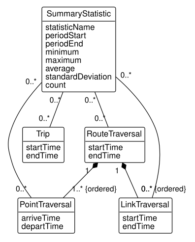
Exercise 5.37 Figure 5.23 shows the event logs a vehicle’s data terminal records and the office imports. Describe it in English, and explain what the generalization’s {disjoint, incomplete} allows.
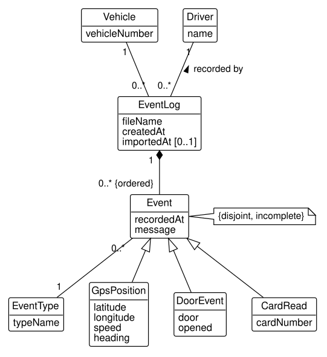
Exercise 5.38 Figure 5.24 shows transfers between access points. Describe it in English, and give an example of a transfer that is not symmetric.
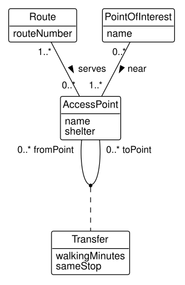
Exercise 5.39 Figure 5.25 shows a testing laboratory’s samples and their chain of custody. Describe it in English. What does the qualifier on the sample number say about how samples are numbered?
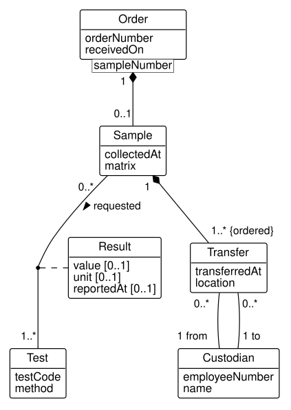
Exercise 5.40 Figure 5.26 shows cycle counting in a distribution center. Describe it in English. Can a count exist whose item is not stocked at its location? What does the diagram say, and what should the business decide?
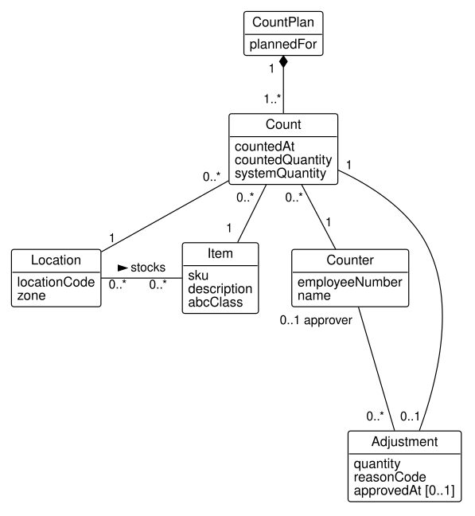
Exercise 5.41 Figure 5.27 shows engineering drawings and their revisions. Describe it in English, including the two associations between Revision and Engineer and what the generalization’s constraints mean for a drawing.
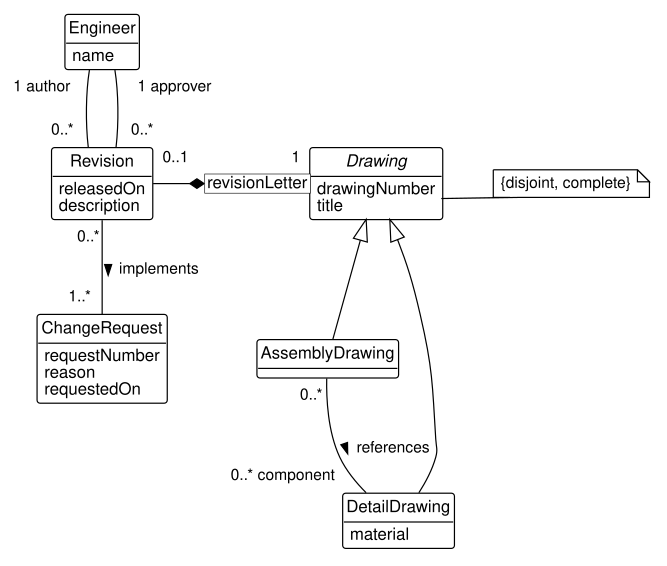